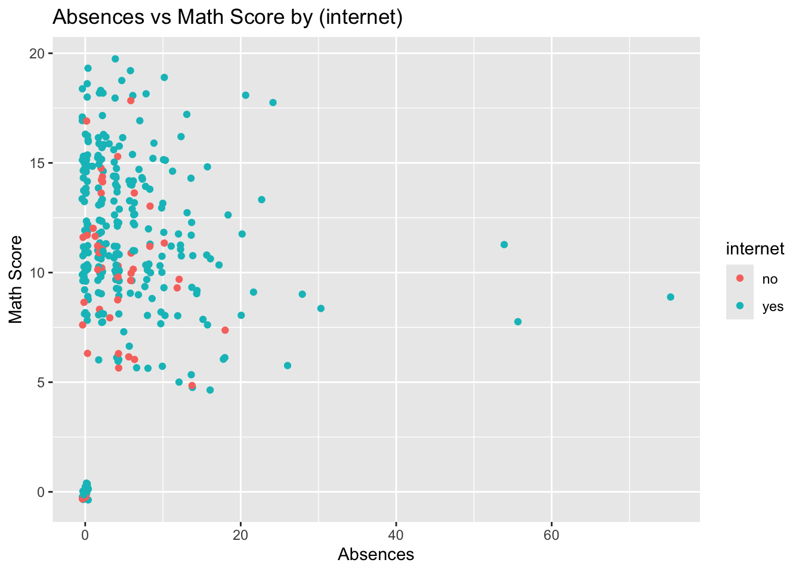
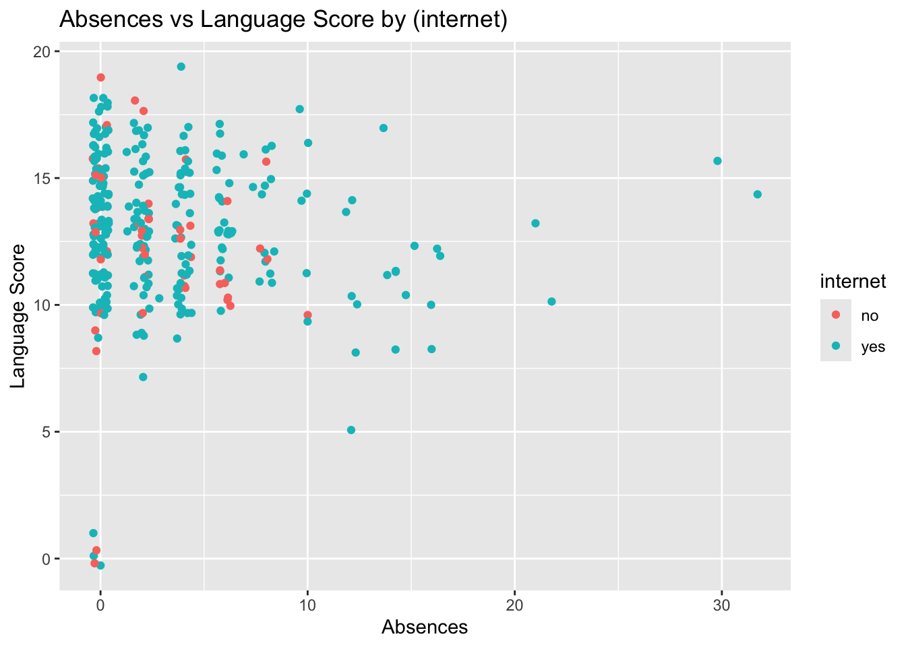
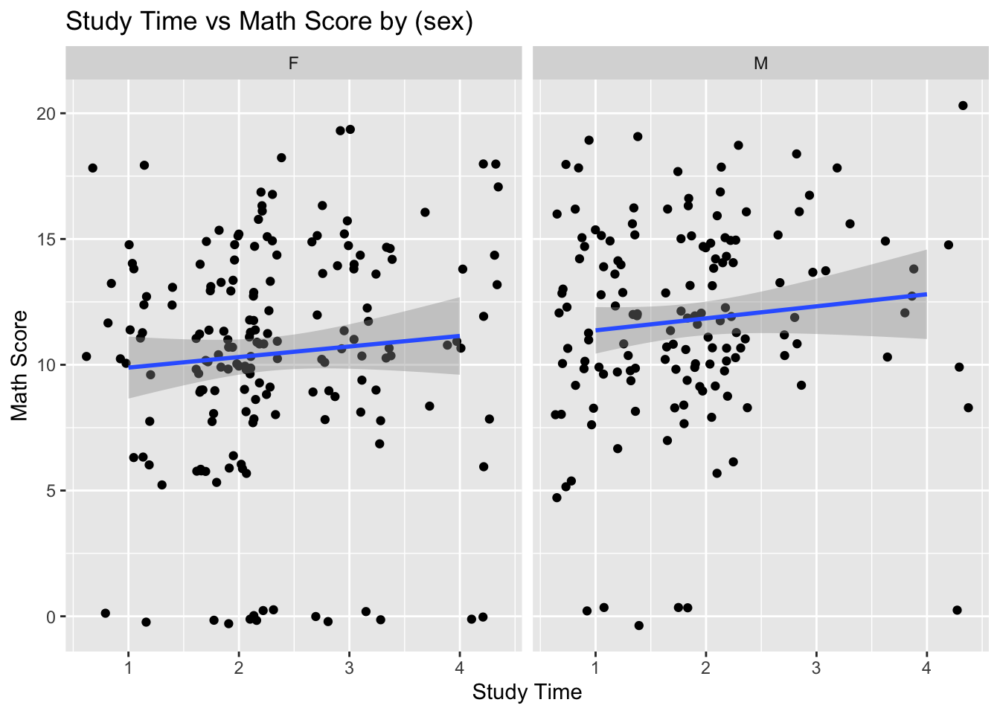
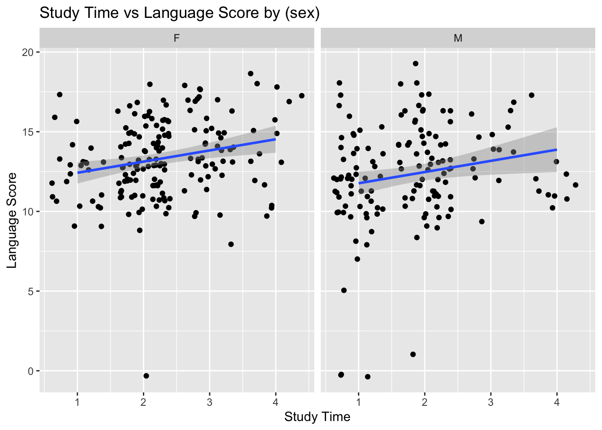
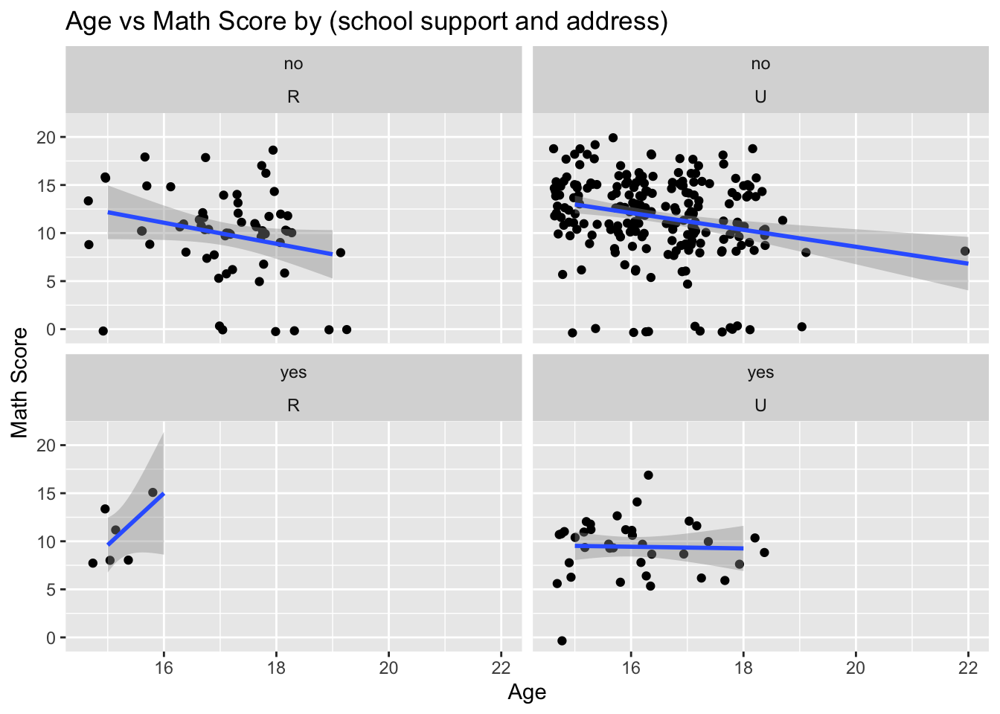

library("tidyverse")
read_method_1 <- function(file1, file2) {
d1 <- read.table(file1, sep=";", header=TRUE)
d2 <- read.table(file2, sep=";", header=TRUE)
d3 <- merge(d1,d2,by=c("school","sex","age","address","famsize","Pstatus","Medu","Fedu","Mjob","Fjob","reason","nursery","internet"))
return (d3)
}
read_method_2 <- function(file1, file2) {
d1 <- read_delim(file1, delim=";", show_col_types = FALSE)
d2 <- read_delim(file2, delim=";", show_col_types = FALSE)
join_on_columns <- names(d1)[!names(d1) %in% c("G1", "G2", "G3", "paid", "absences")]
d3 <- inner_join(d1, d2, join_on_columns, suffix = c("_math", "_lang"))
return (list(d1=d1, d2=d2, combined=d3))
}Homework 5
Task 1: Read in the Data and Modify
Reading in data
- Modify the provided code to read in the data and combine.
- Read in and combine using tidyverse and inner_join().
Modified code for reading in.
str(read_method_1("../data/hw5/student-mat.csv", "../data/hw5/student-por.csv"))'data.frame': 382 obs. of 53 variables:
$ school : chr "GP" "GP" "GP" "GP" ...
$ sex : chr "F" "F" "F" "F" ...
$ age : int 15 15 15 15 15 15 15 15 15 15 ...
$ address : chr "R" "R" "R" "R" ...
$ famsize : chr "GT3" "GT3" "GT3" "GT3" ...
$ Pstatus : chr "T" "T" "T" "T" ...
$ Medu : int 1 1 2 2 3 3 3 2 3 3 ...
$ Fedu : int 1 1 2 4 3 4 4 2 1 3 ...
$ Mjob : chr "at_home" "other" "at_home" "services" ...
$ Fjob : chr "other" "other" "other" "health" ...
$ reason : chr "home" "reputation" "reputation" "course" ...
$ nursery : chr "yes" "no" "yes" "yes" ...
$ internet : chr "yes" "yes" "no" "yes" ...
$ guardian.x : chr "mother" "mother" "mother" "mother" ...
$ traveltime.x: int 2 1 1 1 2 1 2 2 2 1 ...
$ studytime.x : int 4 2 1 3 3 3 3 2 4 4 ...
$ failures.x : int 1 2 0 0 2 0 2 0 0 0 ...
$ schoolsup.x : chr "yes" "yes" "yes" "yes" ...
$ famsup.x : chr "yes" "yes" "yes" "yes" ...
$ paid.x : chr "yes" "no" "yes" "yes" ...
$ activities.x: chr "yes" "no" "yes" "yes" ...
$ higher.x : chr "yes" "yes" "yes" "yes" ...
$ romantic.x : chr "no" "yes" "no" "no" ...
$ famrel.x : int 3 3 4 4 4 4 4 4 4 4 ...
$ freetime.x : int 1 3 3 3 2 3 2 1 4 3 ...
$ goout.x : int 2 4 1 2 1 2 2 3 2 3 ...
$ Dalc.x : int 1 2 1 1 2 1 2 1 2 1 ...
$ Walc.x : int 1 4 1 1 3 1 2 3 3 1 ...
$ health.x : int 1 5 2 5 3 5 5 4 3 4 ...
$ absences.x : int 2 2 8 2 8 2 0 2 12 10 ...
$ G1.x : int 7 8 14 10 10 12 12 8 16 10 ...
$ G2.x : int 10 6 13 9 10 12 0 9 16 11 ...
$ G3.x : int 10 5 13 8 10 11 0 8 16 11 ...
$ guardian.y : chr "mother" "mother" "mother" "mother" ...
$ traveltime.y: int 2 1 1 1 2 1 2 2 2 1 ...
$ studytime.y : int 4 2 1 3 3 3 3 2 4 4 ...
$ failures.y : int 0 0 0 0 0 0 0 0 0 0 ...
$ schoolsup.y : chr "yes" "yes" "yes" "yes" ...
$ famsup.y : chr "yes" "yes" "yes" "yes" ...
$ paid.y : chr "yes" "no" "no" "no" ...
$ activities.y: chr "yes" "no" "yes" "yes" ...
$ higher.y : chr "yes" "yes" "yes" "yes" ...
$ romantic.y : chr "no" "yes" "no" "no" ...
$ famrel.y : int 3 3 4 4 4 4 4 4 4 4 ...
$ freetime.y : int 1 3 3 3 2 3 2 1 4 3 ...
$ goout.y : int 2 4 1 2 1 2 2 3 2 3 ...
$ Dalc.y : int 1 2 1 1 2 1 2 1 2 1 ...
$ Walc.y : int 1 4 1 1 3 1 2 3 3 1 ...
$ health.y : int 1 5 2 5 3 5 5 4 3 4 ...
$ absences.y : int 4 2 8 2 2 2 0 0 6 10 ...
$ G1.y : int 13 13 14 10 13 11 10 11 15 10 ...
$ G2.y : int 13 11 13 11 13 12 11 10 15 10 ...
$ G3.y : int 13 11 12 10 13 12 12 11 15 10 ...Using inner_join() with all variables other than G1, G2, G3, paid, and absences.
data <- read_method_2("../data/hw5/student-mat.csv", "../data/hw5/student-por.csv")
str(data$combined, give.attr = FALSE)spc_tbl_ [320 × 38] (S3: spec_tbl_df/tbl_df/tbl/data.frame)
$ school : chr [1:320] "GP" "GP" "GP" "GP" ...
$ sex : chr [1:320] "F" "F" "F" "F" ...
$ age : num [1:320] 18 17 15 16 16 16 17 15 15 15 ...
$ address : chr [1:320] "U" "U" "U" "U" ...
$ famsize : chr [1:320] "GT3" "GT3" "GT3" "GT3" ...
$ Pstatus : chr [1:320] "A" "T" "T" "T" ...
$ Medu : num [1:320] 4 1 4 3 4 2 4 3 3 4 ...
$ Fedu : num [1:320] 4 1 2 3 3 2 4 2 4 4 ...
$ Mjob : chr [1:320] "at_home" "at_home" "health" "other" ...
$ Fjob : chr [1:320] "teacher" "other" "services" "other" ...
$ reason : chr [1:320] "course" "course" "home" "home" ...
$ guardian : chr [1:320] "mother" "father" "mother" "father" ...
$ traveltime : num [1:320] 2 1 1 1 1 1 2 1 1 1 ...
$ studytime : num [1:320] 2 2 3 2 2 2 2 2 2 2 ...
$ failures : num [1:320] 0 0 0 0 0 0 0 0 0 0 ...
$ schoolsup : chr [1:320] "yes" "no" "no" "no" ...
$ famsup : chr [1:320] "no" "yes" "yes" "yes" ...
$ paid_math : chr [1:320] "no" "no" "yes" "yes" ...
$ activities : chr [1:320] "no" "no" "yes" "no" ...
$ nursery : chr [1:320] "yes" "no" "yes" "yes" ...
$ higher : chr [1:320] "yes" "yes" "yes" "yes" ...
$ internet : chr [1:320] "no" "yes" "yes" "no" ...
$ romantic : chr [1:320] "no" "no" "yes" "no" ...
$ famrel : num [1:320] 4 5 3 4 5 4 4 4 5 3 ...
$ freetime : num [1:320] 3 3 2 3 4 4 1 2 5 3 ...
$ goout : num [1:320] 4 3 2 2 2 4 4 2 1 3 ...
$ Dalc : num [1:320] 1 1 1 1 1 1 1 1 1 1 ...
$ Walc : num [1:320] 1 1 1 2 2 1 1 1 1 2 ...
$ health : num [1:320] 3 3 5 5 5 3 1 1 5 2 ...
$ absences_math: num [1:320] 6 4 2 4 10 0 6 0 0 0 ...
$ G1_math : num [1:320] 5 5 15 6 15 12 6 16 14 10 ...
$ G2_math : num [1:320] 6 5 14 10 15 12 5 18 15 8 ...
$ G3_math : num [1:320] 6 6 15 10 15 11 6 19 15 9 ...
$ paid_lang : chr [1:320] "no" "no" "no" "no" ...
$ absences_lang: num [1:320] 4 2 0 0 6 0 2 0 0 2 ...
$ G1_lang : num [1:320] 0 9 14 11 12 13 10 15 12 14 ...
$ G2_lang : num [1:320] 11 11 14 13 12 12 13 16 12 14 ...
$ G3_lang : num [1:320] 11 11 14 13 13 13 13 17 13 14 ...Note: When using the same variables from the given merge code, this is warning is seen.
Warning in inner_join(d1, d2, by = variables) :
Detected an unexpected many-to-many relationship between `x` and `y`.
ℹ Row 79 of `x` matches multiple rows in `y`.
ℹ Row 79 of `y` matches multiple rows in `x`.
ℹ If a many-to-many relationship is expected, set `relationship = "many-to-many"` to silence this
warning.This inner_join() creates way more data than expected or desired. This is because the data is not unique rows for that variable set. It is matching multiple rows from the other data set. Joining the data here means the student is likely the same student found in both data sets for different classes (they have the same attributes for things like age, sex, address, etc.). The given variables are fairly specific, but not enough to make the rows unique.
For the math data, Portuguese, and combined, choose four categorical variables and convert those into factor variables.
Variables: “internet”, “Pstatus”, “famsize”, “sex”
variables_chosen <- c("internet", "Pstatus", "famsize", "sex")
str(data$combined[,variables_chosen], give.attr = FALSE)tibble [320 × 4] (S3: tbl_df/tbl/data.frame)
$ internet: chr [1:320] "no" "yes" "yes" "no" ...
$ Pstatus : chr [1:320] "A" "T" "T" "T" ...
$ famsize : chr [1:320] "GT3" "GT3" "GT3" "GT3" ...
$ sex : chr [1:320] "F" "F" "F" "F" ...data$d1 <- data$d1 |> mutate(across(all_of(variables_chosen), as.factor))
data$d2 <- data$d2 |> mutate(across(all_of(variables_chosen), as.factor))
data$combined <- data$combined |> mutate(across(all_of(variables_chosen), as.factor))
str(data$combined[,variables_chosen], give.attr = FALSE)tibble [320 × 4] (S3: tbl_df/tbl/data.frame)
$ internet: Factor w/ 2 levels "no","yes": 1 2 2 1 2 2 1 2 2 2 ...
$ Pstatus : Factor w/ 2 levels "A","T": 1 2 2 2 2 2 1 1 2 2 ...
$ famsize : Factor w/ 2 levels "GT3","LE3": 1 1 1 1 2 2 1 2 1 1 ...
$ sex : Factor w/ 2 levels "F","M": 1 1 1 1 2 2 1 2 2 1 ...Task 2: Summarize the Data (Very Basic EDA)
Look at how the data is stored and see if everything makes sense.
Looking at students.txt from the zip file for further descriptions of the variables, we see:
str(data$combined[c("Medu","Fedu","traveltime","studytime","failures","famrel","freetime","goout","Dalc","Walc","health","G1_math","G2_lang")])tibble [320 × 13] (S3: tbl_df/tbl/data.frame)
$ Medu : num [1:320] 4 1 4 3 4 2 4 3 3 4 ...
$ Fedu : num [1:320] 4 1 2 3 3 2 4 2 4 4 ...
$ traveltime: num [1:320] 2 1 1 1 1 1 2 1 1 1 ...
$ studytime : num [1:320] 2 2 3 2 2 2 2 2 2 2 ...
$ failures : num [1:320] 0 0 0 0 0 0 0 0 0 0 ...
$ famrel : num [1:320] 4 5 3 4 5 4 4 4 5 3 ...
$ freetime : num [1:320] 3 3 2 3 4 4 1 2 5 3 ...
$ goout : num [1:320] 4 3 2 2 2 4 4 2 1 3 ...
$ Dalc : num [1:320] 1 1 1 1 1 1 1 1 1 1 ...
$ Walc : num [1:320] 1 1 1 2 2 1 1 1 1 2 ...
$ health : num [1:320] 3 3 5 5 5 3 1 1 5 2 ...
$ G1_math : num [1:320] 5 5 15 6 15 12 6 16 14 10 ...
$ G2_lang : num [1:320] 11 11 14 13 12 12 13 16 12 14 ...- Medu/Fedu - Education levels that are bucketed (2 is 5th to 9th grade).
- traveltime - Unequal bucketing of time data. It has 15 min intervals that switches to 30 minute interval, and finishes with a single value of 1 hour.
- studytime - 1hr, 3hr, and 5hr intervals and a single value of 10hrs.
- failures - n if 1<=n<3, else 4 (a lot of values are 0, so those are really 4)
- famrel, freetime, goout, Dalc, Walc, health - these are ratings 1-5 and shouldn’t be numerically summarized (a 1 and a 5 don’t necessarily average to a 3, and two 1’s from two people aren’t necessarily the same)
- G1, G2 - No issues, but for some reason the source site lists them as categorical
Document the missing values in the data.
The data claims to have no missing values on the source site.
colSums(is.na(data$combined)) school sex age address famsize
0 0 0 0 0
Pstatus Medu Fedu Mjob Fjob
0 0 0 0 0
reason guardian traveltime studytime failures
0 0 0 0 0
schoolsup famsup paid_math activities nursery
0 0 0 0 0
higher internet romantic famrel freetime
0 0 0 0 0
goout Dalc Walc health absences_math
0 0 0 0 0
G1_math G2_math G3_math paid_lang absences_lang
0 0 0 0 0
G1_lang G2_lang G3_lang
0 0 0 It seems to check out, all 0’s.
Categorical Variables
Variables: “internet”, “Pstatus”, “famsize”, “sex”
Contingency table.
- One-way
table(data$combined$Pstatus)
A T
31 289 For most of the data, we see that the parents live together.
- Two-way
table(data$combined$sex, data$combined$Pstatus)
A T
F 18 156
M 13 133Between sex, there seems to be little to no difference in parent’s living together or apart.
- Three-way
table(data$combined$sex, data$combined$Pstatus, data$combined$famsize), , = GT3
A T
F 12 118
M 4 96
, , = LE3
A T
F 6 38
M 9 37Surprisingly, the numbers for those with 3 children or greater are much higher than those 3 or less. The less than 3 children seems to have a higher ratio of parent’s not living together.
Conditional two-way table.
- Method 1
table(data$combined$sex, data$combined$famsize, data$combined$Pstatus)[1,,]
A T
GT3 12 118
LE3 6 38- Method 2
with(data$combined |> filter(sex == "M"), table(famsize, Pstatus)) Pstatus
famsize A T
GT3 4 96
LE3 9 37These two methods show the Female and Male counts of family size/parental living situation. Comparing the 2, the only major difference is the GT3 and LE3 for apart living parents flips. This doesn’t necessarily mean anything, though.
- Method 3
plot_data <- data$combined |>
group_by(internet, famsize) |>
summarize(count = n()) |>
pivot_wider(names_from=internet, values_from=count)`summarise()` has grouped output by 'internet'. You can override using the
`.groups` argument.The ratio of larger families having internet is much larger than that of smaller families.
Stacked bar graph.
ggplot(data$combined, aes(x = famsize, fill = internet)) + geom_bar() + labs(x="Family Size", y="Has Internet", title="Family Size to Internet Ratios", fill="Has Internet")This graphically displays the previous comparison of family size and internet.
ggplot(data$combined, aes(x = famsize, fill = internet)) + geom_bar(position="dodge") + labs(x="Family Size", y="Has Internet", title="Family Size to Internet Ratios", fill="Has Internet")Finally a non-stacked version of the plot is shown.
Numerical Variables
Variables: “age”, “absences”, “G1”, “G2”, “G3”
- Measures of center and spread
data$combined |>
select(age, starts_with("absences"), starts_with("G3")) |>
summarize(across(everything(), list("mean"=mean, "med"=median, "sd"=sd, "IQR"=IQR), .names = "{.fn}_{.col}")) |>
str()tibble [1 × 20] (S3: tbl_df/tbl/data.frame)
$ mean_age : num 16.5
$ med_age : num 16
$ sd_age : num 1.14
$ IQR_age : num 1
$ mean_absences_math: num 5.41
$ med_absences_math : num 4
$ sd_absences_math : num 7.84
$ IQR_absences_math : num 7.25
$ mean_absences_lang: num 3.25
$ med_absences_lang : num 2
$ sd_absences_lang : num 4.56
$ IQR_absences_lang : num 4
$ mean_G3_math : num 11
$ med_G3_math : num 11
$ sd_G3_math : num 4.3
$ IQR_G3_math : num 5
$ mean_G3_lang : num 12.9
$ med_G3_lang : num 13
$ sd_G3_lang : num 2.89
$ IQR_G3_lang : num 4This shows the mean, sd, and IQR of each numeric variable. The language class has a higher mean and smaller standard deviation than the math class for final grade.
- Repeated with subset of not having internet.
data$combined |>
filter(internet == "no") |>
select(age, starts_with("absences"), starts_with("G3")) |>
summarize(across(everything(), list("mean"=mean, "med"=median, "sd"=sd, "IQR"=IQR), .names = "{.fn}_{.col}")) |>
str()tibble [1 × 20] (S3: tbl_df/tbl/data.frame)
$ mean_age : num 16.6
$ med_age : num 17
$ sd_age : num 1.06
$ IQR_age : num 1
$ mean_absences_math: num 4.02
$ med_absences_math : num 3.5
$ sd_absences_math : num 3.99
$ IQR_absences_math : num 4.25
$ mean_absences_lang: num 2.75
$ med_absences_lang : num 2
$ sd_absences_lang : num 2.76
$ IQR_absences_lang : num 4
$ mean_G3_math : num 9.69
$ med_G3_math : num 10
$ sd_G3_math : num 4.12
$ IQR_G3_math : num 4
$ mean_G3_lang : num 12.2
$ med_G3_lang : num 12.5
$ sd_G3_lang : num 3.53
$ IQR_G3_lang : num 3We see not having internet has had a negative effect. The means have gone down. The spread is wider.
- Center and spread for a grouping of those with parents separated or not.
data$combined |>
select(age, starts_with("absences"), starts_with("G3"), Pstatus) |>
group_by(Pstatus) |>
summarize(across(everything(), list("mean"=mean, "med"=median, "sd"=sd, "IQR"=IQR), .names = "{.fn}_{.col}")) |>
str()tibble [2 × 21] (S3: tbl_df/tbl/data.frame)
$ Pstatus : Factor w/ 2 levels "A","T": 1 2
$ mean_age : num [1:2] 16.4 16.5
$ med_age : num [1:2] 16 16
$ sd_age : num [1:2] 1.2 1.14
$ IQR_age : num [1:2] 2 1
$ mean_absences_math: num [1:2] 10.03 4.92
$ med_absences_math : num [1:2] 6 3
$ sd_absences_math : num [1:2] 13.98 6.72
$ IQR_absences_math : num [1:2] 9 6
$ mean_absences_lang: num [1:2] 4.1 3.16
$ med_absences_lang : num [1:2] 2 2
$ sd_absences_lang : num [1:2] 5.56 4.44
$ IQR_absences_lang : num [1:2] 6 4
$ mean_G3_math : num [1:2] 11.9 10.9
$ med_G3_math : num [1:2] 11 11
$ sd_G3_math : num [1:2] 3.61 4.37
$ IQR_G3_math : num [1:2] 4.5 5
$ mean_G3_lang : num [1:2] 13.5 12.8
$ med_G3_lang : num [1:2] 13 13
$ sd_G3_lang : num [1:2] 2.22 2.95
$ IQR_G3_lang : num [1:2] 3 4It looks like parents separated or not has little effect on means but seems to increase the variability.
- Center and spread, two grouping of internet (y/n) and parents (together,apart)
data$combined |>
select(age, starts_with("absences"), starts_with("G3"), Pstatus, internet) |>
group_by(Pstatus, internet) |>
summarize(across(everything(), list("mean"=mean, "sd"=sd, "IQR"=IQR), .names = "{.fn}_{.col}")) |>
str()`summarise()` has grouped output by 'Pstatus'. You can override using the
`.groups` argument.gropd_df [4 × 17] (S3: grouped_df/tbl_df/tbl/data.frame)
$ Pstatus : Factor w/ 2 levels "A","T": 1 1 2 2
$ internet : Factor w/ 2 levels "no","yes": 1 2 1 2
$ mean_age : num [1:4] 16.6 16.3 16.7 16.5
$ sd_age : num [1:4] 1.14 1.23 1.07 1.15
$ IQR_age : num [1:4] 1 2 1 1
$ mean_absences_math: num [1:4] 8.4 10.35 3.51 5.16
$ sd_absences_math : num [1:4] 6.07 15.1 3.43 7.11
$ IQR_absences_math : num [1:4] 4 9.5 4 7
$ mean_absences_lang: num [1:4] 4.4 4.04 2.56 3.26
$ sd_absences_lang : num [1:4] 3.85 5.9 2.59 4.68
$ IQR_absences_lang : num [1:4] 4 5.5 4 4
$ mean_G3_math : num [1:4] 8.2 12.62 9.86 11.14
$ sd_G3_math : num [1:4] 2.59 3.36 4.25 4.37
$ IQR_G3_math : num [1:4] 5 4 3.5 5
$ mean_G3_lang : num [1:4] 11.8 13.8 12.3 12.9
$ sd_G3_lang : num [1:4] 2.17 2.12 3.67 2.8
$ IQR_G3_lang : num [1:4] 3 3.5 3 4
- attr(*, "groups")= tibble [2 × 2] (S3: tbl_df/tbl/data.frame)
..$ Pstatus: Factor w/ 2 levels "A","T": 1 2
..$ .rows : list<int> [1:2]
.. ..$ : int [1:2] 1 2
.. ..$ : int [1:2] 3 4
.. ..@ ptype: int(0)
..- attr(*, ".drop")= logi TRUEThe highest mean outcome seems to be parents apart and with internet. The variability generally goes down a bit too, but it depends on math vs language course.
- Correlation matrix
data$combined |>
select(age, starts_with("absences"), starts_with("G3")) |>
cor() |>
round(3) age absences_math absences_lang G3_math G3_lang
age 1.000 0.144 0.047 -0.206 -0.009
absences_math 0.144 1.000 0.564 -0.028 -0.136
absences_lang 0.047 0.564 1.000 -0.117 -0.071
G3_math -0.206 -0.028 -0.117 1.000 0.476
G3_lang -0.009 -0.136 -0.071 0.476 1.000The largest correlation effect to a final grade is age, but it is a minor negative correlation.
- Plots
- Histogram
ggplot(data$combined) +
geom_histogram(aes(x=G1_math, fill=internet), binwidth=1) +
labs(title="Math Score by Internet", x="Math Score", y="Count", fill="Internet")ggplot(data$combined) +
geom_histogram(aes(x=G1_lang, fill=internet), binwidth=1) +
labs(title="Language Score by Internet", x="Language Score", y="Count", fill="Internet")Between the two plots of math and language, it looks like generally the scores are higher in language. It’s hard to tell if internet had any effect.
- Kernel Density
ggplot(data$combined) +
geom_density(aes(x=G2_math, fill=internet)) +
labs(title="Math Score by Internet", x="Math Score", y="Density", fill="Internet")ggplot(data$combined) +
geom_density(aes(x=G2_lang, fill=internet)) +
labs(title="Language Score by Internet", x="Language Score", y="Density", fill="Internet")
The same density plot of math vs language tell sthe same story (the axis shifted some). It’s a little more clear from this plot that internet had a negative effect on math, but no clear effect on language.
- Boxplot
ggplot(data$combined) +
geom_boxplot(aes(y=G3_math, fill=internet)) +
labs(title="Math Score by Internet", x=NULL, y="Math Score", fill="Internet")ggplot(data$combined) +
geom_boxplot(aes(y=G3_lang, fill=internet)) +
labs(title="Language Score by Internet", x=NULL, y="Language Score", fill="Internet")The boxplots show the same story, but a little better for language to see some slight negative effect of no internet and decreased variability.
- ScatterPlots
- One - Absences in math to math score, colored by internet (y/n)
ggplot(data$combined) +
geom_point(aes(x=absences_math, y=G3_math, color=internet), position="jitter") +
labs(title="Absences vs Math Score by (internet)", x="Absences", y="Math Score")
It does look like the higher absences may tend to be those with internet, but it’s unclear from this what the score effect would be.
- Two - The same, but for language.
ggplot(data$combined) +
geom_point(aes(x=absences_lang, y=G3_lang, color=internet), position="jitter") +
labs(title="Absences vs Language Score by (internet)", x="Absences", y="Language Score")
This agrees well with the previous view of higher absence holders are those with internet.
- Faceting
- One - This takes a look at study time effect on score, covered over sex.
ggplot(data$combined, aes(x=studytime, y=G3_math)) +
geom_point(position="jitter") +
geom_smooth(method="lm") +
facet_wrap(~ sex) +
labs(title="Study Time vs Math Score by (sex)", x="Study Time", y="Math Score")`geom_smooth()` using formula = 'y ~ x'
There is not a clear effect either way. It’s surprising to see study time is having such little effect.
- Two - The same as previous, but for language.
ggplot(data$combined, aes(x=studytime, y=G3_lang)) +
geom_point(position="jitter") +
geom_smooth(method="lm") +
facet_wrap(~ sex) +
labs(title="Study Time vs Language Score by (sex)", x="Study Time", y="Language Score")`geom_smooth()` using formula = 'y ~ x'
There seems to be a small positive effect of study time on language, but it does not visibly differ between sex.
- Faceting again, but over 2 variables.
- The effect of having school support (y/n), and whether the address is urban/rural (U/R).
ggplot(data$combined, aes(x=age, y=G3_math)) +
geom_point(position="jitter") +
geom_smooth(method="lm") +
facet_wrap(~ schoolsup + address) +
labs(title="Age vs Math Score by (school support and address)", x="Age", y="Math Score")`geom_smooth()` using formula = 'y ~ x'
There seems to be a general downward trend on age. But having school support can help somewhat. The low data points item is unreliable (rural with support).
- The same as previous but for language.
ggplot(data$combined, aes(x=age, y=G3_lang)) +
geom_point(position="jitter") +
geom_smooth(method="lm") +
facet_wrap(~ schoolsup + address) +
labs(title="Age vs Language Score by (school support and address)", x="Age", y="Language Score")`geom_smooth()` using formula = 'y ~ x'For language, it seems there may be a positive effect of urban vs rural, but not so much from school support.